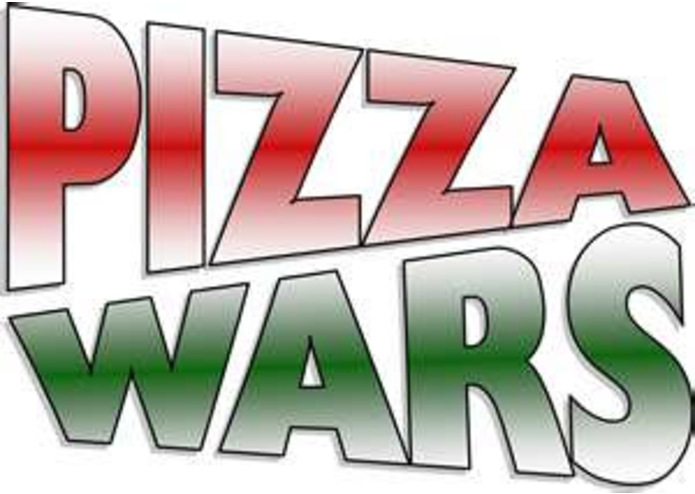

Pizza Wars 2 Information Hut
As everyone who participated will remember, the first and the worst day of the second Pizza Wars was when a man from nebraska first insulted all of pizza culture by putting a slice of pineapple atop his fresh slice of za.
For whatever reason, the pineapple "pizza" is regarded in some places as a delicacy. People will attest to the sweet flavor of the fruit adding to the savory flavor of the pizza. While this information remains ungrounded and often thought of as nothing but hysterical rambling by those who have been brainwashed after eating a slice.